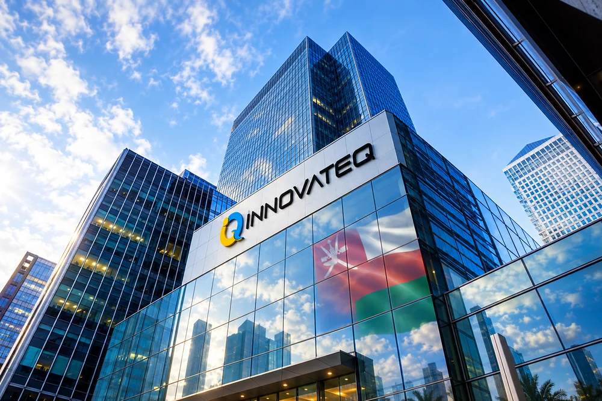

A national oil company's digital transformation, made into a company.
Two decades of hands‑on asset management experience, commercialized so operators anywhere can fast‑track their own transformation.
Built by operators, for operators.
iNNOVATEQ is a spin‑off company from PDO's digital transformation program. The company was established to offer Oil & Gas Companies the culmination of two decades of expertise in achieving significant and sustainable business transformation through digital transformation. At iNNOVATEQ we pride ourselves on coming from a Petroleum Operator background. To us customer focus means fitting our solution to your needs, not the other way round. What we offer our clients is practical asset management solutions, that fit their organization and business drivers; tailored to their assets and staff.
iNNOVATEQ was established to offer Oil & Gas Companies the culmination of two decades of expertise in achieving significant and sustainable business transformation through digital transformation.

iNNOVATEQ follows the philosophy of doing the right things, in the right way, offering their customers a hands‑on experience driven (fit‑for‑purpose) solutions and services, that will fast‑track the client's digital transformation, and avoid pitfalls ahead of client's own journey.
Currently iNNOVATEQ is serving their global based clients through regional offices incubating 60+ talented resources and SMEs, along with authorized partners across the globe.
At iNNOVATEQ we pride ourselves on coming from a Petroleum Operator background. To us customer focus means fitting our solution to your needs, not the other way round. What we offer our clients is practical asset management solutions, that fit their organization and business drivers; tailored to their assets and staff.
"I built Nibras to shine a light on where an employee's time would add the most value — modeled, in a way, on the human nervous system."
— Dr. Riyadh Moosa, CEO
From inefficiency, an idea. From an idea, a company.
Dr. Riyadh Moosa founded iNNOVATEQ after seeing, first‑hand, how much of an engineer's day was lost navigating disconnected systems instead of making decisions. Exception Based Management — the idea at the core of Nibras — was his answer.
Read the full CEO messageThe team steering the platform.
Engineering, delivery, product, commercial, HR and finance.